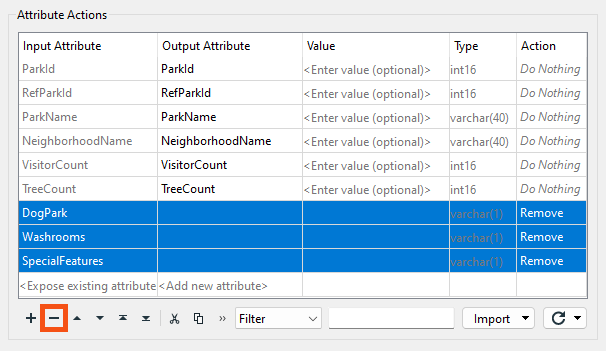
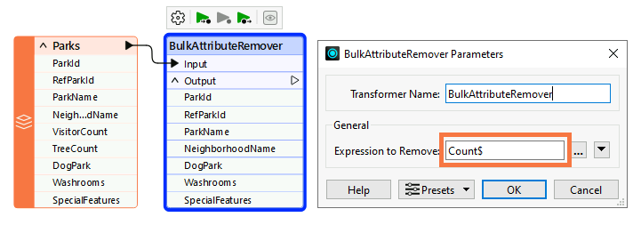
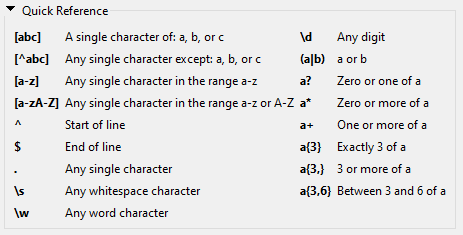
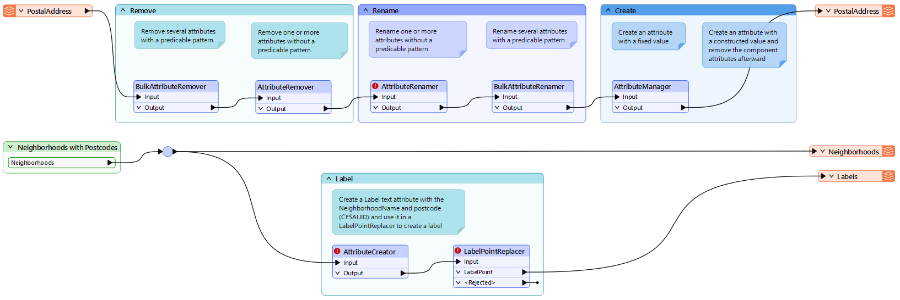
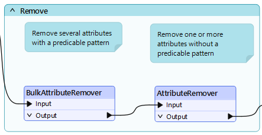
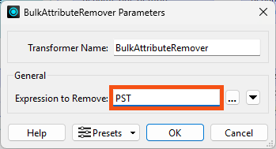
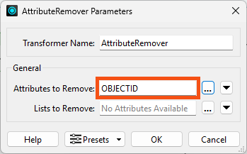
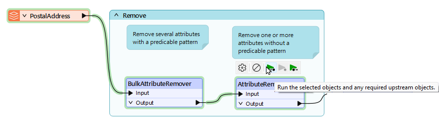

Learning Objectives
After completing this lesson, you'll be able to:
- Select which attributes you'd like to keep on a record.
- Select which attributes you'd like to remove from a record.
Instructions
In this lesson, you will:
- Scroll down to read the text below.
- Optional: You can view the video instead of reading the text. The video covers the text material.
- Complete the Quiz toward the bottom of the page.
- Optional: Let us know if you found this lesson relevant to your role by filling out the survey at the bottom of the page.
- Click 'Next' to mark the lesson complete.
Resources
Introduction
You might think removing attributes is a less critical task in FME. That's because - for a manual attribute schema - only attributes defined in the writer are written to the output; extra attributes not on the writer schema are dropped.
However, removing attributes has benefits:
- Removing attributes that aren't required tidies up a workspace and makes it easier to understand
- A workspace is a complex network of objects and schemas. Removing attributes simplifies this network and makes the Workbench interface more responsive
- All data processing incurs costs of time and memory. Removing attributes means less data is being processed, and so FME performs faster

You can unexpose attributes on reader feature types under the User Attributes tab. Unexposing attributes tidies your workspace, but it does not improve performance. However, some formats (primarily databases) also include an "Attributes to Read" parameter; using it will improve performance.
Transformers that can remove attributes are:
- AttributeKeeper
- AttributeManager
- AttributeRemover
- BulkAttributeRemover
Removing Attributes
The AttributeManager and AttributeRemover use the same technique: select an attribute to remove.

In the AttributeManager, you can remove attributes by selecting them and clicking the - button. Alternatively, you can change the action field from Do Nothing to Remove.
Notice in the above screenshot that three attributes have been removed. The Output Attribute column is blank to signify that it is no longer present.
Keeping Attributes
The AttributeKeeper transformer carries out the same function but approaches it from the opposite direction. It lets the user specify which attributes are not to be removed; in other words, this transformer lets the user specify which ones to keep.
So, you should use the AttributeManager when you want to remove one or two attributes but keep the rest. You should use the AttributeKeeper when you want to remove the majority of attributes and retain only one or two.
Bulk Attribute Removal
The BulkAttributeRemover - like the BulkAttributeRenamer - lets the user carry out a process on multiple attributes. In this case, instead of being able to select all attributes, the user enters a string-matching expression to define which attributes to remove:

Here, the user removes all attributes whose names end in the word "Count."
Refer to the RegEx Quick Reference below for help constructing regular expressions.

You can access AI Assist in any transformer that uses RegEx, SQL, or Python. AI Assist helps you build statements from natural language.
Exercise
Want to check your work from the last exercise? Here are the transformers Jennifer chose:
- Remove
- BulkAttributeRemover
- AttributeRemover
- Rename
- AttributeRenamer
- BulkAttributeRenamer
- Create
- Label
If you haven't done so already, please drag these transformers into their corresponding bookmark.

1) Open Starting Workspace
- Start FME Workbench (2026.1 or later).
- Open the starting workspace (C:\FMEData\Workspaces\TransformAttributes\removing-attributes.fmw).
- Ensure the first bookmark has a BulkAttributeRemover and an AttributeRemover.

2) Configure BulkAttributeRemover
- Double-click the BulkAttributeRemover to open its parameters.
- Enter PST for the Expression to Remove.
- This will remove the four attributes containing the string PST: PSTLADDRESS, PSTLCITY, PSTLPROV, and INTPSTLCD.

3) Configure AttributeRemover
- Double-click the AttributeRemover to open its parameters.
- Select OBJECTID as the Attribute to Remove.

4) View Results
- Run the workspace to the AttributeRemover.

- Inspect the AttributeRemover's Output cache.
- Confirm the five attributes have been removed.
Leave Us Feedback on This Lesson